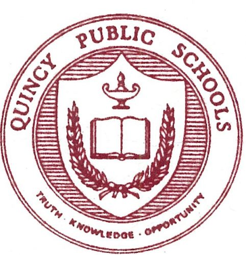

Experience
Quincy College
Quincy, MA
IT Intern
July 2023 - August 2023
- Acquired and applied SQL skills to implement with Jenzabar; demonstrating rapid learning and adaptability in database management
- Conducted comprehensive hardware inventory, recording serial numbers, MAC and IP addresses for improved asset management across 2 campuses
- Configured software applications (CrowdStrike, VS Code, Microsoft 365 suite) and systems administrative roles during setup of new computers
- Detected and resolved potential network and system vulnerabilities on lab computers that were incorrectly identified as being connected to the admin network without proper authorization
- Optimized hardware performance through proactive software updates and hardware upgrades; minimizing downtime, enhancing system reliability and maintaining system availability
- Provided technical support, resolving computer and networking issues for administration and summer classes
Quincy Public Schools
Quincy, MA
IT Intern
July 2022 - August 2022
- Coordinated with 7 colleagues to manage Chromebook inventory and maintenance across 18 schools district-wide, ensuring optimal functionality for administrative, student, and teacher use
- Delivered prompt and efficient technical support for a diverse range of IT issues, including computer troubleshooting, printer maintenance, and network connectivity
